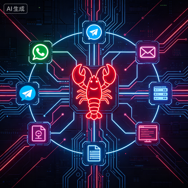

从"WhatsApp 转发器"到 GitHub 史上最快增长项目
Peter Steinberger，奥地利人，40多岁，iOS 开发圈的老炮。他创办的 PSPDFKit（一个 PDF 工具包）被 Apple、Dropbox、SAP 用了十几年，后来卖给了 Insight Partners。
卖完公司后他开始"vibe coding"——随手写各种小项目。前43个全部失败，没人用。
第44个项目，2025年11月的一个周末，他写了一个极其简单的东西：让 Claude 能回复他的 WhatsApp 消息。最初叫"Clawdbot"，代码量不到500行。
两个月后，这个项目在 GitHub 上突破10万星。又过了一个月，25万星。Sam Altman 发推提到它。Fortune 做了专题。TechRepublic 称它为"有史以来被采用最快的软件"。
到2026年5月，OpenClaw 已经有近1000名贡献者，直接引爆了 Meta（Hatch）、Google（Remy）、OpenAI 的 AI Agent 大战。
一个周末项目，凭什么？答案在架构里。
核心设计哲学：不是聊天机器人，是本地守护进程
理解 OpenClaw 架构的第一步，是理解它不是什么。
ChatGPT 是一个网页应用——你打开浏览器，输入问题，它回答你。关掉浏览器，它就不存在了。
OpenClaw 是一个守护进程（daemon）——它跑在你自己的电脑上，24小时不停。不是浏览器标签页，不是云服务，是一个持久运行的本地进程，拥有你的文件系统访问权、Shell 执行权和网络访问权。
这个设计决策是 OpenClaw 一切能力的根基，也是它一切安全问题的根源。
三层架构：Gateway → 推理引擎 → 执行环境
OpenClaw 的架构分三层，每一层解决一个核心问题：
第一层：Gateway（网关控制面）
Gateway 是整个系统的中枢——一个长期运行的 Node.js 进程，充当 WebSocket 服务器。它负责：
- 消息路由：接收来自 WhatsApp、Telegram、Slack、Discord、CLI 等渠道的消息，统一转换为内部格式
- 会话管理：维护每个对话的状态和上下文
- 认证鉴权：确认消息来源的合法性
- Control UI：提供一个本地 Web 界面，让你监控 Agent 的行为
关键设计：Gateway 是单一入口。无论消息从哪个渠道进来，都经过同一个控制面。这意味着你只需要在一个地方配置权限和规则。
第二层：推理引擎（Agent Runner + Agentic Loop）
消息进入 Gateway 后，被传递给 Agent Runner。这里是"思考"发生的地方：
- 上下文组装：从记忆系统中提取相关历史，从工具注册表中获取可用能力
- 模型调用：将组装好的 prompt 发送给 LLM（默认 Claude，可切换）
- Agentic Loop（心跳循环）：这是核心——一个持续运行的 ReAct 循环，模型输出"思考→行动→观察"的序列，直到任务完成或达到步数上限
- 响应路径：将最终结果格式化，通过 Gateway 返回给用户
Agentic Loop 是 OpenClaw 和普通聊天机器人的本质区别。ChatGPT 是"一问一答"——你问，它答，结束。OpenClaw 是"一问多步"——你说"帮我订明天去上海的最便宜机票"，它会自己搜索、比价、确认、下单，中间可能执行十几个步骤，每一步都是一次独立的"思考→行动→观察"循环。
第三层：执行环境（Execution Environment）
这是最"疯狂"的一层。OpenClaw 的执行环境拥有：
- 文件系统完整访问权：能读写你电脑上的任何文件
- Shell 执行权：能运行任意命令行命令
- 网络访问权：能访问任何 URL、调用任何 API
- 应用交互权：能操作你电脑上的其他应用程序
没有沙箱。没有权限隔离。Agent 以你的用户身份运行，拥有你拥有的一切权限。
这就是为什么 OpenClaw 能做到"帮你买东西、发邮件、管文件"——因为它真的有权限做这些事。也是为什么微软专门发了一篇安全博客警告企业用户。
为什么这个架构能赢：三个反直觉的决策
决策一：本地优先，不走云端。
所有竞品（ChatGPT、Gemini、Copilot）都是云服务——你的数据上传到别人的服务器，别人的模型处理后返回结果。OpenClaw 反过来：模型调用走云端（API），但所有执行、存储、状态管理都在本地。
这意味着：你的文件不会上传到任何地方；你的对话历史存在自己硬盘上；你可以随时拔网线，Agent 的记忆和配置都还在。对隐私敏感的用户来说，这是杀手级特性。
决策二：渠道无关，消息统一。
OpenClaw 不绑定任何一个平台。你可以从 WhatsApp 给它发消息，也可以从 Telegram、Slack、Discord、甚至命令行。所有渠道通过 Channel Adapter（渠道适配器）接入 Gateway，内部处理逻辑完全一致。
这解决了一个真实痛点：你不需要为了用 AI 助手而换一个新的 App。你在哪里，它就在哪里。
决策三：无沙箱执行，信任用户。
这是最有争议的决策。大多数 AI 产品会严格限制 Agent 能做什么——不能访问文件系统，不能执行命令，不能发送消息。OpenClaw 选择了完全相反的路径：给 Agent 最大权限，让用户自己决定信任边界。
这个决策让 OpenClaw 的能力上限远超竞品，但也让它成为安全研究者的噩梦。
微软为什么专门发文警告
2026年2月，微软安全博客发了一篇文章：《Running OpenClaw Safely: Identity, Isolation, and Runtime Risk》。IBM X-Force 也发了警告。TechRepublic 的标题更直接："有史以来被采用最快的软件，也是一个安全盲区。"
核心问题：
- 无内置安全边界：Agent 能执行 Shell 命令、访问文件、与应用交互，没有任何内置限制
- 横向移动风险：一旦 Agent 被注入恶意指令（Prompt Injection），它拥有的权限就变成了攻击者的权限
- 外部代码执行：OpenClaw 支持从外部源下载和执行"Skills"（技能插件），这等于允许运行未经审计的第三方代码
- 影子 AI 问题：很多企业员工在公司电脑上偷偷装了 OpenClaw，IT 部门完全不知道——这意味着一个拥有公司网络权限的无监管 Agent 在后台运行
有用户把 OpenClaw Gateway 暴露在公网上，用默认配置，结果 API Key、OAuth Token、私人聊天记录全部泄露。
这不是 OpenClaw 的 bug——这是它的设计哲学带来的必然代价。最大的自由意味着最大的风险。
从架构看 AI Agent 的未来走向
OpenClaw 的架构揭示了 AI Agent 领域的一个根本张力：能力与安全的不可兼得。
Meta 的 Hatch、Google 的 Remy 选择了另一条路——在自己的生态系统内提供 Agent 能力，严格控制权限边界。你能用 Remy 管 Gmail 和 Google Calendar，但它不能碰你的本地文件。安全，但能力有限。
OpenClaw 选择了极端的另一头——给你一切权限，让你自己负责。危险，但能力无限。
这两种路径最终会走向融合。未来的 AI Agent 大概率会是：默认安全（像 Remy），但允许用户逐步授权更多权限（像 OpenClaw）。就像手机 App 的权限管理——你可以给它相机权限，也可以不给。
但在那个未来到来之前，OpenClaw 用一个周末项目的架构，证明了一件事：AI Agent 的瓶颈从来不是模型能力，而是"你愿意给它多少权限"。
如果你对 AI Agent 的安全问题感兴趣，推荐阅读：你的 AI Agent 正在被「注毒」——Prompt 注入如何成为企业 AI 部署的头号威胁。想了解 Agent 的基础架构原理，看这篇：AI Agent 凭什么能"自主干活"？从四大模块拆解它的内核。